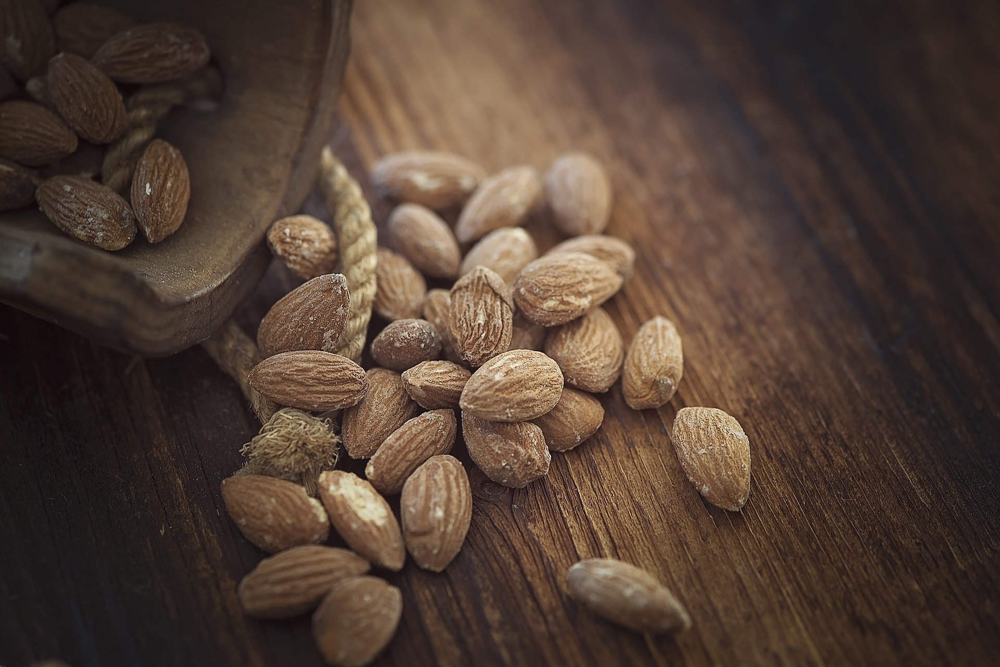

Baking With Almond Flour Is Good For The Heart
 Almond flour, also known as almond meal, is maybe an alternative to wheat flour for baking and cooking. The only ingredients that are in blanched almond flour are ground, whole almonds with the skin removed. This flour is gluten-free, low in carbohydrates, high in fiber and a high source of protein.
Macronutrients include carbohydrates, fat and protein, and almond flour provides your diet with all three of these nutrients. A 1/4-cup serving of almond flour supplies your body with 4.6 grams of carbohydrates, which are your brain’s main source of energy. Almond flour also increases your daily intake of protein by 5.2 grams in each 1/4-cup serving. Protein is important for a strong immune system and healthy cell growth. A quarter-cup of almond flour also enriches your diet with 3 grams of polyunsaturated fats. Although low-fat diets are heart-healthy, polyunsaturated fats provide omega-3 fatty acids that are essential for clotting blood and brain cell growth, as well as protecting the heart and minimizing the risk of stroke.
( CHOCOLATE CHIP COOKIES)
Ingredients
- 1/4 cup brown sugar,light or dark
- 1/2 teaspoon baking soda
- 1/4 teaspoon salt
- 2 tablespoons butter, at room temperature
- 2 teaspoons vanilla extract
- 2 large eggs
- 2 cups of almond flour
- 1-1/2 cups of chocolate chips
Instructions
- Preheat the oven to 375°F
- combine the brown sugar, baking soda, salt, and butter, mix all until smooth
- Mix in the vanilla, egg, and almond flour, stirring to combine
- Add in the chocolate chips
- Scoop up dough one tablespoon at a time onto the prepared baking sheet; a tablespoon cookie scoop works well.
- Bake the cookies for 9 to 12 minutes, until golden brown.
- Allow them to cool on the pan for 2 minutes
Complementary Foods
Serving almond flour bread with your meals supplements the protein you get from meat in your daily diet. It also balances your diet when served with fruits and vegetables. Try rolling fish, chicken and chops in almond flour to get a crunchy coating when frying. Using almond flour for pancakes or muffins is a nutritious, alternative to store-bought mixes. Add fresh berries to the almond flour batter for added nutrients. The sky is the limit with almond flour and other healthy ingredients like eggs, spices, canola oil, fruits, flax meal, coconut milk, honey or agave until your recipes. If you follow a gluten-free diet, baking with almond flour complements other gluten-free foods like fruits, eggs, meat, fish, poultry, and beans.